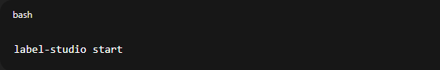

ANOTACION DE HOJAS EN LABEL STUDIO
Integrantes G6
Huaman Rimarachin Milver
Rivera Jimenez Yanet
Tuesta Chichipe Aracely
Introducción
La anotación de imágenes es esencial en tareas de visión por computadora, como la detección de objetos y clasificación de imágenes. LabelStudio, una plataforma de código abierto, facilita la anotación de datos, permitiendo etiquetar imágenes para entrenar modelos de aprendizaje automático (Pavlov et al., 2020). Este proyecto explora la integración de LabelStudio con RStudio para analizar imágenes anotadas. El flujo de trabajo incluye la carga de imágenes, su anotación en LabelStudio, y el análisis de estas anotaciones en RStudio, con el objetivo de evaluar cómo las anotaciones impactan en el rendimiento de los modelos y mejorar la calidad de los datos en proyectos de análisis de imágenes.
Objetivo
Realizar las anotaciones de las 25 imagenes trabajadas con su respectiva area, peciolo y escala para entrenar el programa
Estructura para realizar la anotacion de imagenes
Iniciar LabelStudio
Crear un nuevo proyecto
Subir las imágenes
Definir tipos de anotaciones
Realizar las anotaciones correspondientes
Guardar las anotaciones
Repetir para todas las imágenes
Desarrollo
##Iniciar LabelStudio
###Instalación y configuración inicial de LabelStudio:
Si aún no lo tienes instalado, puedes hacerlo desde el sitio oficial de LabelStudio o usando el siguiente comando en la terminal:

Inicia LabelStudio:
 ## Crear el nuevo proyecto En la interfaz de LabelStudio, haz clic en “Create Project”.

Ingresa un nombre para tu proyecto y una breve descripción.

Elige el tipo de tarea (por ejemplo, Imagen si vas a trabajar con imágenes).
Subir las imagenes dentro del proyecto recién creado, haz
clic en “Import” y selecciona “Upload Files”.
LabelStudio te permitirá subir múltiples imágenes a la vez. También puedes integrarlo con Google Drive o importar desde otras fuentes.
##Configurar el esquema de anotaciones:
En LabelStudio, puedes definir qué tipo de anotaciones deseas realizar en las imágenes. Esto se configura en el paso de labeling interface.
Haz clic en “Labeling Setup” y selecciona el tipo de anotación. Aquí puedes elegir:

Polígonos (Polygons): Para áreas irregulares.
Selecciona y configura las opciones que mejor se adapten a tu caso. Realizar las anotaciones correspondientes
##Comenzar la anotación:
Después de configurar la interfaz de anotación, haz clic en “Label” dentro de tu proyecto.
Se abrirán las imágenes cargadas, y podrás comenzar a anotar. Dibuja el polígono alrededor del objeto:

Haz clic para establecer los puntos de un polígono alrededor del objeto que deseas segmentar. Cada clic creará un vértice del polígono.

Continúa haciendo clic en el contorno del objeto hasta que lo rodees completamente.
Para cerrar el polígono, haz clic en el primer punto donde comenzaste.
##Asignar una etiqueta:
Después de cerrar el polígono, se te pedirá que asocies el polígono con una etiqueta.
Por ejemplo, en nuestro caso sera hoja, peciolo y escala
Selecciona la etiqueta adecuada de la lista de etiquetas predefinidas o crea una nueva etiqueta si es necesario. ##Guardar las anotaciones:
Una vez hayas etiquetado el objeto o área de interés, LabelStudio te permitirá guardar la anotación.
Puedes hacer esto en tiempo real o al finalizar varias anotaciones.
##Repetir para todas las imágenes:
Después de haber anotado una imagen, puedes proceder a la siguiente imagen y repetir el proceso de anotación.
LabelStudio también permite trabajar en equipos, por lo que diferentes personas pueden etiquetar imágenes de manera simultánea.